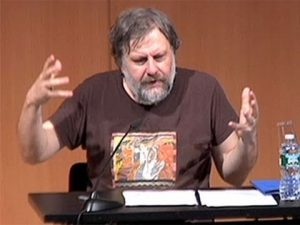
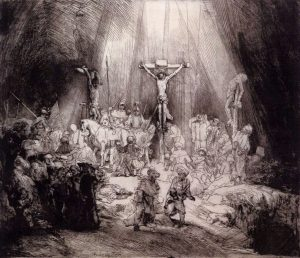
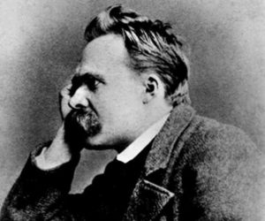

I am told by Zizek—as well as Hegelian friends—that any attempt to argue or disagree with Hegel fits nicely within his dialectical scheme. “Oh, you disagree with Hegel,” they say, “so you agree with him?” As Zizek warns, even Gilles Deleuze’s “generalized anti-Hegelianism” “…is much more ambiguous than it may appear: the elevation of Hegel into a straw of the enemy obfuscates a disavowed proximity.”[1]
Since this article develops out of my own generalized anti-Hegelianism, let me from the outset admit my own proximity not only to Hegel but to Zizek as well. Indeed, in researching this article I have been surprised at every turn by Zizek’s development of Hegel; which is to say that I have sometimes not recognized Zizek’s Hegel as Hegel, making me wonder if there is not some ‘disavowed proximity’ to the post-modern straw figure that Zizek himself sometimes constructs.
In other words, what I take Zizek’s warning to mean is not that engaging Hegel ipso facto consummates a union with him, but that it is precisely the engagement that admits a profound respect for his thought; that philosophy does, for better or worse, proceed in the shadow of Hegel.
Speaking in this shadow, this essay does not attempt to develop an argument against Zizek or Hegel. Rather, I simply wish to raise a few questions about Zizek’s radical death of God theology. In many ways, his interpretation of the death of God reiterates the Hegelian dialectical structure offered by Thomas Altizer, whose thought was later taken to its radical zero point by Mark C. Taylor. Zizek differs from these two in that his dialectic is decisively materialist, giving it a political and Marxist edge absent from most instantiations of radical theology.
Recently, radical theologians Jeff Robbins and Clayton Crockett have used Zizek’s death of God theology to articulate their own version of “new materialism.” While I absolutely welcome the political edge that Zizek, Crockett, and Robbins give to radical death of God theology, I wonder if the death of God must be eternally bound to Hegelian dialectics.
And moreover, is the death of God as politically liberative as Zizek and those who follow him imagine? What if, after the death of God—especially in its Zizekian articulation—capitalism functions more efficiently since new entities step in to take God’s place?
In Hegel’s Philosophy of Religion—which Zizek creatively re-interprets—Christ occupies the second movement of dialectical sublation. It is the death of God, as Christ, which sublates into the Holy Spirit. In Hegel’s Philosophy of Right, corporations occupy the second place within the dialectic, and Hegel is quite clear that when particular subjects no longer rely on the state, they turn to the corporation.
As Hardt and Negri have shown, the decline of the sovereignty of nation states has given rise to a new form of sovereignty “composed of a series of national and supernational organisms” regulating social, economic, and political production. What Hegel calls objectivity, truth, and ethical life now appears in a “new order that envelops the entire space…a notion of right that encompasses all time within its ethical foundation.”
Inasmuch as this new space is constructed by the global flow of capital, producing not only products but also identities and differences within a society of control, corporations— understood in late global capitalism as persons—are one of the organisms that have eclipsed both the state and God. After developing this argument, I will conclude by making a modest plea for a Deleuzian reading of the death of God.
For Zizek, Christianity is the only religion that leads to dialectical materialism. As he continually asserts, “not only is Christianity … the only truly consistent atheism, it is also that atheists are the only true believers.”[2] Zizek thus repeats Hegel’s prejudice that Christianity is the consummation of religion. In doing this, Zizek gives the death of God a meaning in-itself that is grounded in the “singularity of [the] pure event” of Christ’s death.
As he writes in Monstrosity, “Christ is the vanishing mediator between the substantial transcendent God-in-itself and God qua virtual spiritual community.”[3] As the vanishing mediator, Christ does not restore God to Godself, or to the particular contingent subject, but rather, actualizes God’s own estrangement to Godself. The incarnation is God’s own negation that “turns around onto itself and brings us back to determinate (finite, temporal) reality.”[4] Or, to some up it succinctly: “In the standard version of atheism, God dies for men who stop believing in him, in Christianity, God dies for himself.”[5]
Herein lies Zizek’s genius, as well as one of his most profound supplements to interpreting Hegel. God, The Universal, or the Absolute, is not the name of that which essentially grounds the particularity of any given subject, but rather the very locus of the gap within subjectivity itself. It is not subjects who need to be grounded in God, nor is it simply that God Godself desires to be united with the particular finite.
Instead, Zizek places what he calls a “minimal difference” within the universal itself, such that God is stripped of its changeless, infinite, and substantial qualities. As Zizek writes:
the difference is not on the side of the particular content… but on the side of the Universal. The universal is not the encompassing container of the particular content, the peaceful-medium background of the conflict of particularities; the universal “as such” is an unbearable antagonism [and] self contradiction….[6]
What we ‘recognize’ in the Universal is not our essentiality, but the inherent difference and the agonistic struggle it entails; a struggle that comes to its fullest fruition when Christ cries on the cross: “My God, my God, why have you forsaken me?”
Christ is, in essence, the supreme figure of the parallax gap, the point that cannot meet any other point, the Word itself that creates the world out of the nothingness inherent to itself. Zizek elaborates this point from Monstrosity more fully in Less than Nothing, when he writes:
The divine is not an abyssal, all encompassing Substance/Unity behind the multitude of appearances; the divine is the negative power tearing apart the organic unity. Christ’s ‘death’ is not overcome but elevated into Spirit’s negativity.[7]
In and through this elevation, spirit is revealed to the community of believers who come together in the wake of Christ’s death. The death of God in the figure of Christ is, for Zizek, the negation of negation, and the spirit that is produced out of this double movement becomes the sight where, as he puts it, “our perspective shifts and thus turns failure into a true success.”[8] But what is the failure?
The failure is precisely the loss of essential subjectivity that comes about in the realization that God is dead. After this death, there is no longer a great synthesis or reconciliation between faith and reason, between the particular desire for essentiality and its consummation, grounding, or recognition by a transcendent God. The only way to be truly atheist, Zizek says, is to redouble our modern and post-modern alienation from God and place this alienation within Godself by turning “the distance from Man to God [into] the distance of God from himself.”
As Zizek writes: “What dies on the cross is not only the earthly-finite representative of God, but God himself, the very transcendent God of beyond.” This, Zizek asserts, is the true meaning of the cross, and thus the very reason why we fear the four words: “He was made man.” What the incarnation means, is that God Godself died on the Cross, and with him, any appeal that humanity might make to transcendent beyond.
Another way to say this is that the only true immanence is the one has results from the complete emptying out of transcendence. The full force of immanence is brought about when the transcendent Father and the incarnate Christ sublate into the Holy Spirit. Such that only the death of God in the singularity of Christ inaugurates the Holy Spirit. But what is this Sprit that is produced in Christ’s death?
Again, we see the importance of Zizek’s interpretation of Hegel. For him, God is not resurrected as the universal Spirit teleogocially marching toward progress, using and abusing particular human subjects as a means to an end. No, this Spirit has no agency outside the community of believers who believe in it. As Zizek writes: “the ultimate lesson to be learned from the divine incarnation…[is that] the finite existence of mortal humans is the only site of the Spirit, the site where Spirit achieves its actuality.”[9]
Key to see here is the point that Zizek makes repeatedly in Less Than Nothing, that ‘sublation’ itself does not result in a higher order, or announce a progress; rather, sublation announces and produces another gap. All that exists, now, is material finitude. This is Zizek’s political point: the death of God liberates humanity from a dependence on anything outside itself. It is not that the Holy Spirit is guiding particular finite subjects, but particular finite subjects that guide and produce the Holy Spirit. The death of God allows the Spirit of the community to fully actualize its own subjective spirit; because the community realizes that there is no big Other, it produces spirit by believing in it as a way of grounding their actions. Only by being fully released from an appeal to transcendence can we be good, revolutionary, materialists.
Zizek’s version of atheism depends on this absolute death, which is why, for him, the only way to be truly atheist is to pass through Christianity. For him, true atheism depends on asserting the absolute inexistence of the big Other, which is equally, as we have seen, the absolute loss or collapse of transcendence into immanence. Yet, Zizek asks an important question in Less than Nothing, a question I am not convinced he answers.
Is the passage from God to the Holy Ghost not precisely the passage from transcendence to an immanent link? The problem resides in the precise nature of this link: after the reduction of transcendence is the big Other still here?[10]
In other words, does the possibility not always remain that the death of God might lead to God being replaced by other entities?
Not surprisingly, it his Hegel himself who provides some insight to this question. As he explains in his Philosophy of Right, the individual comes to understand itself its relation to others and the self in the tripartite organisms of the family, the corporation, and the state. I will be focusing on the later two, arguing that Corporations have taken the place of the state and assumed the position of the big Other within what Hardt and Negri call Empire.
Hegel’s concept of the corporation is of course different than our current understanding, but this does not disavow important connections. For Hegel, corporations are associations of people such as guilds, religious societies, educational clubs, townships, etc. Yet, Hegel is quite clear that corporations are primarily “estates of trade and industry,” and it is in this way that we can understand the modern corporation—defined by law as a person—as nothing less than the consummation of corporate universality.
As Hegel makes clear, corporations possess the right— “under the conditions of public authority—to safeguard and promote their own interests.”[11] Particular individuals find their subjectivity represented in the recognition of the work they perform within the corporate collective. As Hegel writes, “the member of a corporation has no need to demonstrate his competence and his regular income and means of support—i.e. the fact that he is somebody.”[12]
Hegel is clear when discussing corporations that in moments of State decline, the individual can and will fall back on the security of the corporation: As he writes: “This universal, which the modern state does not always offer him, can be found in the corporation.”[13] Just as the death of God sublates itself into a spirit produced by a community of believers, so too does the death or decline of the state sublate itself into the corporation. Of course, what Hegel calls a corporation could equally be applied to any collective mass, to a union, or to activist organizations or uprisings such as Occupy Wall Street. Hegel is always clear that oppositions to the state in this form are necessary to maintain the continual negative movement of the spirit.
The point that I wish to make is that the way corporate personhood functions today reveals the consummation of corporate universality. That is, the corporation—as person—has superseded the state and works today as the primary force of biopolitical subjectivation. The question is how to draw this link between the corporate, the corporation (as person), and the common good, without thereby collapsing the potential for corporate-collective action. The manipulation of the corporation by biopolitical forces is at the moment inevitable, but the resistance will be corporate or else impotent.
Just as God seeks to enact its estrangement to itself in the figure of Christ, did we not see the State revealing its estrangement to itself in the 2008 corporate bailout? We should see the bailout as the State’s admittance that it can no longer function without the assistance of corporate power. Indeed, was the cry of the banks and the corporations in 2008 not a redoubling of Christ’s call on the cross? My state, my state, why have you forsaken me?
The difference, of course, is that the government did not forsake its corporations. Or we might say that it performed the resurrection all to quickly, essentially skipping Holy Saturday. Utilizing another metaphor, George Schmidt makes a similar point: “Working beneath the ‘too-big-to-fail’ doctrine is a religiously nauseating ideology, which locates the corporation itself as, in the language of Paul Tillich, ‘the ground-of-being.’”[14]
If there is a gap between the corporation and Christ, it is that the corporation produces its own form of recognition thus eradicating the need for any negative movement. If the corporation requires recognition or sublation, it simply produces the subjects it needs for its own survival and sustenance through the “mass cultural industry” of advertising, communication networks, the production of language, the integration of power into modes of daily life, and various other means of bio-political subjectivation.[15]
Hardt and Negri make the point succinctly: “It is a subject that produces its own image of authority. This is a form of legitimation that rests on nothing outside itself and is repurposed ceaselessly by developing its own language of self-validation.”[16] If the corporation does point beyond itself—to ideals of beauty, freedom, whiteness, femininity, the family, etc.—it is producing those values in the same gesture.
It is this interplay between pointing beyond and producing in the same gesture that is at the heart of Deleuze’s critique of Hegelian dialectics. As he writes in What is Philosophy?:
The simulacrum, the simulation of a packet of noodles, has become the true concept; and the one who packages the product, the commodity, or work of art has become the philosopher…How could philosophy, an old person, compete against young executives in a race for universals of communication for determining the marketability of the concept?[17]
What Deleuze is speaking of is perhaps best explained by way of a sort of Zizekian example. In an episode of Mad Men, the advertising genius Don Draper is having a conversation about love with one of his many mistresses. She is explaining to Don how she has never felt true love. His reply is brilliant: “The reason you haven’t felt it is because it doesn’t exist. What you call love was invented by guys like me, to sell [panty hose.]” Don understands clearly the system he is part of and the world that he, as an ad man, helps to construct. Love, something that is supposed to be universal, produced, like the Holy Spirit, in a relationship amongst people, is simply a false representation that he has invented.
Indeed, do all of Don’s vacuous actions—his drinking, his smoking, his many mistresses, and his empty disdain for everything around him—not stem from his experience of the death of God? From the fact that he knows all too well that all our values are merely lies invented to sell commodities? Is he not the quintessential resentful man who knows all too well that it is not just religious or capitalist consciousness that is false, but all forms of consciousness, as Zizek always says?
For Deleuze, when we remain within the dialectic and the labor of the negative, the active question gets replaced by a reactive ontological one. Instead of asking, “what can I do with my own affirmation of power on the plane of immanence,” one asks, “what am I in relation to this representation of power before me?” The ontological question thus eradicates the possibility of true novelty inasmuch as political struggle becomes the struggle for recognition. One is always struggling to be incorporated within a system that is already excluding them. The struggle itself affirms the validity of the big Other instead of seeing the virtual potency of the plane of immanence.
Instead of making one’s own difference an object of affirmation the dialectic leads to a diminishment of the force of one’s own difference through its desire to be recognized by the other. Thus, Deleuze says,
Before and after the death of God…He who is man has not changed: [man remains] the reactive man, the slave, a machine for manufacturing the divine. What God is has not changed either; always the divine, the Supreme Being, a machine for manufacturing the slave.[18]
The dialectic “makes the existence of God depend on a synthesis, it synthesis the idea of God with time, becoming, history, and man.” But why? Deleuze’s answer is clear, it does this out of resentment, out of a desire to be something that it is not and the inability to affirm its own difference. Humans kill God so that they might become God without ever asking if the God they had projected was worth becoming like.
We should see that Deleuze’s critique is directed against Feuerbach and the young Marx. Zizek sees the problem as well, and fixes it by locating a split within God. But notice that he can only fix this by foreclosing the death of God into the singular even of Christ’s death. It is not enough to overcome alienation by understanding that God is simply an active reification. “What is missing here,” writes Zizek, “is the properly Christian gesture.” Alienation can only be negated by asserting that God is alienated from Godself.
Zizek relates this negation of alienation—what he calls dis-alienation—to a double kenosis, which for him is the properly Christian form of the dialectical negation of negation. As Zizek writes:
Christ signals the overlapping of the two kenosis: man’s alienation from/in God is simultaneously God’s alienation form himself in Christ. So it is not only that humanity becomes conscious of itself in the alienated figure of God, but: in human religion, God becomes conscious of himself.”[19]
But is Deleuze’s precise question to Hegel not relevant to this structure as well? The particular is the subject, but what is this particular? Which subject? What forces does it consist of? God is the predicate or object, now alienated, but what will is it the object of? Deleuze’s answer is clear. The object is the will of a bad conscious who is resentful over ‘the death of the human,’ who has experienced what Deleuze calls the ‘pure and empty form of time’ within itself. Is there not some significance to the fact that it is only after post-structuralism has deconstructed every notion of identity and self-same subjectivity that Zizek finds it necessary to construct a God with the same features? Might we have here a sort a post-modern notion of the very reification Zizek critiques?
Unlike Zizek, who interprets the proposition that God is dead in a purely speculative sense, Deleuze asserts that the death of God is a “a dramatic proposition, the dramatic proposition par excellence.” This is precisely why Deleuze asks us to ‘mistrust’ the death of God. For as Nietzsche pointed out, “When Gods die, they always die many kinds of deaths.”
For Deleuze, the death of God offers us an impure immanence, a dialectical immanence that relies on transcendence of a singular event for its power. Deleuze thus contrasts Nietzsche with Hegel:
Nietzsche, in contrast to his predecessors, does not believe in this death…he does not make this death an event possessing meaning in-itself. The death of God has as many meanings as there are forces capable of seizing Christ and making him die.
By ‘mistrusting’ the death of God, might we then be able to uncover the forces that made Christ die? To see the death of God not as a singular event but as an event that steeped in what Deleuze calls a ‘multiple sense’?
This is precisely why Deleuze—contra Hegel and Zizek—prefers Jesus to Christ. For it is Jesus who forces us to ask the essential question: what can I do? Deleuze quotes Nietzsche to make his point. “This bearer of glad tidings died the way he lived, the way he taught—not ‘to redeem humanity’, but instead to demonstrate how people need to live. His bequest to humanity was a practice…his conduct on the cross.”[20] The point is not to uncover the singular meaning of God’s death, but to uncover the forces that made him die. Such forces are both historical and contemporary in as much as they repeat cycles of domination.
By attuning ourselves to these forces, we begin to see that the death of Jesus was in no way a unique event with a meaning in-itself. These same forces were active in the crucifixion of thousands upon thousands of people, all of which, in some way or another, posed the same sort of threat to Empire that Jesus may have, and were used not so much to silence the small dissenting voice, but to assert their own power. Crucifixion was always, and will always be, a dramatic display of power.
Such events of oppression are only related to the cross by being absolutely unrelated; far from announcing any meaning in-itself, they announce the pluralism of the cross and the death of God. Resentment seems a natural affect within this contingency of oppression, in as much as we realize that nothing can set it right. Perhaps we can turn this resentment into an active force that embraces the ambiguity, flipping the tables of corporate power like Jesus did, not dialectically, but literally and dramatically. Or, to put it another way, as Occupy Wall Street taught us, we do not yet know what a corporate body can do.
Elijah Prewitt-Davis is a Ph.D. candidate at Drew University. He teaches in the Theology Department at Xavier University and both the Religion and Philosophy Departments at the University of Dayton. His research focuses on modern and contemporary continental philosophy of religion. The working title of his dissertation is “Of the World: The Belief of Gilles Deleuze.”
[1] Slavoj Žižek, The Parallax View (Cambridge MA: MIT Press, 2013), 75.
[2] Slavoj Žižek, Less Than Nothing: Hegel and the Shadow of Dialectical Materialism (New York: Verso Books, 2012), 116.
[3] Slavoj Žižek, Creston Davis, John Milbank, The Monstrosity of Christ: Paradox or Dialectic? (Cambridge MA: MIT Press, 2011), 29.
[4] Ibid., 49.
[5] Ibid., 48.
[6] Ibid, 49.
[7] Less Than Nothing, op. cit., 111.
[8] Ibid., 27.
[9] Monstrosity, op. cit., 60.
[10] Less Than Nothing, op. cit., 102.
[11] Ibid.
[12] Hegel’s Emphasis.
[13] Ibid., 255
[14] George Schmitt, “Climbing the Scala Naturae: The Theological Dimensions of Corporate Personhood” presented at McGill University Center for Research on Religion, October 2012.
[15] See Theodor Adorno, The Culture Industry: Selected Essays on Mass Culture (New York: Routledge, 2009).
[16] Michael Hardt and Antonio Negri, Empire (Cambridge MA: Harvard University Press, 2001), 33.
[17] Gilles Deleuze and Félix Guattari, What is Philosophy?, trans. Hugh Tomlinson and Graham Burchell (New York: Columbia University Press, 1994), 11.
[18] Gilles Deleuze, Nietzsche and Philosophy, trans. Hugh Tomlinson (London: A&C Black, 2006), 150
[19] Monstrosity, op. cit., 75.
[20] Friedrich Nietzsche, The Anti-Christ, Ecce Homo, Twilight of the Idols, And Other Writings (Cambridge: Cambridge University Press, 2005), 33.


Yes, we are alone together—God’s death can be interpreted as murder but that’s a bleak, adolescent perspective. God’s self-sundering is an apogee virtue, the sublime gift of love—the painfully beautiful revelation of total freedom.
G.K. Chesterton, Orthodoxy:
“That a good man may have his back to the wall is no more than we knew already, but that God could have His back to the wall is a boast for all insurgents forever. Christianity is the only religion on earth that has felt that omnipotence made God incomplete. Christianity alone felt that God, to be wholly God, must have been a rebel as well as a king. Alone of all creeds, Christianity has added courage to the virtues of the Creator. For the only courage worth calling courage must necessarily mean that the soul passes a breaking point — and does not break. In this indeed I approach a matter more dark and awful than it is easy to discuss; and I apologize in advance if any of my phrases fall wrong or seem irreverent touching a matter which the greatest saints and thinkers have justly feared to approach. But in the terrific tale of the Passion there is a distinct emotional suggestion that the author of all things (in some unthinkable way) went not only through agony, but through doubt. It is written, ‘Thou shalt not tempt the Lord thy God.’ No; but the Lord thy God may tempt Himself; and it seems as if this was what happened in Gethsemane. In a garden Satan tempted man: and in a garden God tempted God. He passed in some superhuman manner through our human horror of pessimism. When the world shook and the sun was wiped out of heaven, it was not at the crucifixion, but at the cry from the cross: the cry which confessed that God was forsaken of God. And now let the revolutionists choose a creed from all the creeds and a god from all the gods of the world, carefully weighing all the gods of inevitable recurrence and of unalterable power. They will not find another god who has himself been in revolt. Nay (the matter grows too difficult for human speech), but let the atheists themselves choose a god. They will find only one divinity who ever uttered their isolation; only one religion in which God seemed for an instant to be an atheist.”
As you said, the Holy Spirit has no agency outside of the collective, as it is particular finite subjects which produce/sustain it—ideally in the moral tradition of love moving critically toward emancipatory reason.
Mom and dad are never coming home so that means we can do what we want… but that doesn’t mean the spirit they created in us becomes meaningless. We are all by necessity slaves to our guardians at first, in order that we be oriented toward the good—ultimately to be grounded in our pursuit of freedom and truth.